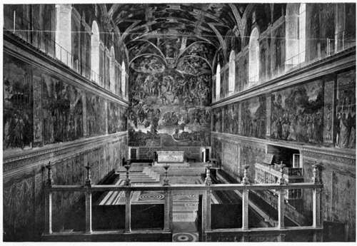

Borgia Alliances. Part 3
Description
This section is from the book "The Life Of Cesare Borgia", by Rafael Sabatini. Also available from Amazon: The Life of Cesare Borgia.
Borgia Alliances. Part 3
Thus Ferrante of the man whose friendship he had been seeking some six weeks earlier, and who had rejected his advances. It is as well to know the precise conditions under which that letter was indited, for extracts from it are too often quoted against Alexander. These conditions known, and known the man who wrote it, the letter's proper value is at once apparent.
THE INTERIOR OF THE SISTINE CHAPEL.
It was Ferrante's hope, and no doubt the hope of Giuliano della Rovere, that the King of Spain would lend an ear to these grievances, and move in the matter of attempting to depose Alexander; but an event more important than any other in the whole history of Spain or of Europe, for that matter was at the moment claiming its full attention, and the trifling affairs of the King of Naples trifling by comparison went all unheeded. For this was the year in which the Genoese navigator, Cristofero Colombo, returned to tell of the new and marvellous world he had discovered beyond the seas, and Ferdinand and Isabella were addressing an appeal to the Pope as Ruler of the World to establish them in the possession of the discovered continent. Whereupon the Pope drew a line from pole to pole, and granted to Spain the dominion over all lands discovered, or to be discovered, one hundred miles westward of Cape Verde and the Azores.
And thus Ferrante's appeal to Spain against a Pope who showed himself so ready and complaisant a friend to Spain went unheeded by Ferdinand and Isabella. And what time the Neapolitan nursed his bitter chagrin, the alliance between Rome and Milan was consolidated by the marriage of Lucrezia Borgia to Giovanni Sforza, the comely weakling who was Lord of Pesaro and Cotignola.
1 Ferdinand Gregorovius, Lucrezia Borgia.
Lucrezia Borgia's story has been told elsewhere; her rehabilitation has been undertaken by a great historian,1 among others, and all serious minded students must be satisfied at this time of day that the Lucrezia Borgia of Hugo's tragedy is a creature of fiction, bearing little or no resemblance to the poor lady who was a pawn in the ambitious game played by her father and her brother Cesare, before she withdrew to Ferrara, where eventually she died in child birth in her forty first year. We know that she left the duke, her husband, stricken with a grief that was shared by his subjects, to whom she had so deeply endeared herself by her exemplary life and loving rule.1
Later, in the course of this narrative, where she crosses the story of her brother Cesare, it will be necessary to deal with some of the revolting calumnies concerning her that were circulated, and, in passing, shall be revealed the sources of the malice that inspired them and the nature of the evidence upon which they rest, to the eternal shame alike of those pretended writers of fact and those avowed writers of fiction who, as dead to scruples as to chivalry, have not hesitated to make her serve their base melodramatic or pornographic ends.
At present, however, there is no more than her first marriage to be recorded. She was fourteen years of age at the time, and, like all the Borgias, of a rare personal beauty, with blue eyes and golden hair. Twice before, already, had she entered into betrothal contracts with gentlemen of her father's native Spain ; but his ever soaring ambition had caused him successively to cancel both those unfulfilled contracts. A husband worthy of the daughter of Cardinal Roderigo Borgia was no longer worthy of the daughter of Pope Alexander VI, for whom an alliance must now be sought among Italy's princely houses. And so she came to be bestowed upon the Lord of Pesaro, with a dowry of 30,000 ducats.
1 See, inter alia, the letters of Alfonso d'Este and Giovanni Gonzaga on her death, quoted in Gregorovius, Lucrezia Borgia.
Her nuptials were celebrated in the Vatican on June 12, 1493, in the splendid manner worthy of the rank of all concerned and of the reputation for magnificence which the Borgia had acquired. That night the Pope gave a supper party, at which were present some ten cardinals and a number of ladies and gentlemen of Rome, besides the ambassadors of Ferrara, Venice, Milan, and France. There was vocal and instrumental music, a comedy was performed, the ladies danced, and they appear to have carried their gaieties well into the dawn. Hardly the sort of scene for which the Vatican was the ideal stage. Yet at the time it should have given little or no scandal. But what a scandal was there not, shortly afterwards, in connection with it, and how that scandal was heaped up later, by stories so revolting of the doings of that night that one is appalled at the minds that conceived them and the credulity that accepted them.
Infessura writes of what he heard, and he writes venomously, as he betrays by the bitter sarcasm with which he refers to the fifty silver cups filled with sweetmeats which the Pope tossed into the laps of ladies present at the earlier part of the celebration. " He did it," says Infessura, " to the greater honour and glory of Almighty God and the Church of Rome." Beyond that he ventures into no great detail, checking himself betimes, however, with a suggested motive for reticence a thousand times worse than any formal accusation. Thus : " Much else is said, of which I do not write, because either it is not true, or, if true, incredible." 1
It is amazing that the veil which Infessura drew with those words should have been pierced not indeed by the cold light of fact, but by the hot eye of prurient imagination; amazing that he should be quoted at all he who was not present considering that we have the testimony of what did take place from the pen of an eye witness, in a letter from Gianandrea Boccaccio, the ambassador of Ferrara, to his master.
1 " Et multa alia dicta sunt, que hie non scribo, que aut non sunt, vel si sunt, incredibilia " (Infessura, Diarium).
Continue to: